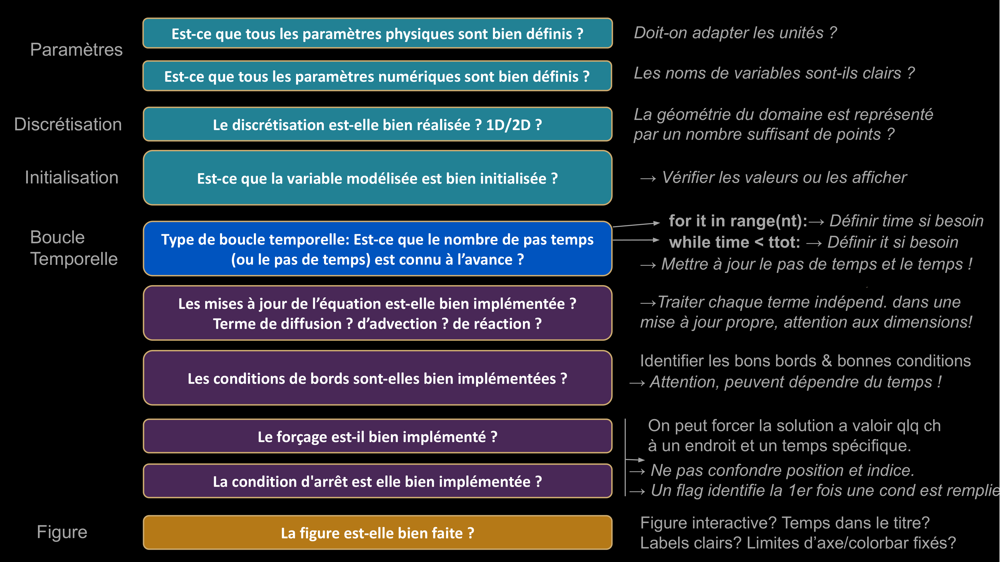

Cours 3#

Objectifs de ce cours#
Conseils et bonnes pratiques pour coder
Discrétisation spatiale
Equations d’un projectile en 2D
Conseils pour (bien) coder#
Structurez toujours vos code ainsi:
Paramètres physiques
Paramètres numériques
Initialisation
Boucle temporelle (avec affichage)
Commenter le but de chaque lignes.
Choisir des noms de variables intuitifs.
Bien respecter l’identation dans les boucles et conditions.
Analysez les erreurs que Python donnent
Vérifiez si votre résultat est physique!
Vérifiez si les variables en mémoire font sens (terminal → jupyter).
Tester le code avant de le finir (step-by-step).
Faire des opérations qui font sens (1/2)#
Quand vous codez, posez vous la question:
Est-ce que l’on additionne des variables qui sont consistantes au niveau des unités ? Par exemple, on peut additionner deux distances, mais pas du temps avec une vitesse, etc. Il faut toujours vérifier que les unités ont du sens:
# BIEN : Multiplier du temps (s) par une vitesse (m/s)
# donne une distance (m), on peut donc ajouter une
# distance (m) a une position (m), ca fait sens !
position += dt * vitesse
# MAL : Une temperature (°C) ne peut pas valoir du temps (s) plus une distance (m)
temperature = temps + distance
Faire des opérations qui font sens (2/2)#
Quand vous codez, posez vous la question:
Est-ce que les opérations sont compatibles avec les dimensions des vecteurs ?
Voici des exemples qui fonctionnent (car les deux ont la même dimension).
T = np.ones(nx)*2
L = np.zeros(nx)
U = T + L
Un exemple qui ne fonctionne pas (car les deux n’ont pas la même dimension) :
T = np.ones(nx)*2
L = np.zeros(nx-1)
U = T + L
Important : Très souvent, Python plante quand l’opération est impossible, mais il donne aussi une indication de ce qui ne va pas. Il faut donc lire ce que Python dit !
Ne pas faire de “hard-coding”#
Il est essentiel de définir TOUS les paramètres au début du code ce qui permet de changer les valeurs au début pour tester le modèle. Nous ne voulons pas toucher à l’intérieur du modèle une fois qu’il est écrit. Changer les paramètres directement dans le code s’appelle faire du “hard-coding”, ce qui est une mauvaise pratique.
Voici un exemple de “hard-coding” à ne pas reproduire:
# Example de hard-coding, les parametres devrait etre definit au debut.
for i in range(10000):
if i % 1000 == 0:
print('Le temps à l itération ', i, ' est ', time)
T[8] = 10
time += 0.1
Document “Check-list”#

Discrétisation spatiale#
À partir du cours suivant, nous modéliserons l’évolution spatio-temporelle d’une quantité physique (par exemple, la température dans le sol). Jusqu’à présent, nous avions discrétisé le temps. Il sera donc aussi nécessaire de discrétiser l’espace, c’est-à-dire de diviser le domaine spatial de modélisation en intervalles avec un ensemble de points où la solution sera calculée :
|----|----|----|----|----|----|----|----|----|----|----|----|----|----|
Par exemple: \(x_0 = 0, x_1 = 0.1, x_2 = 0.2, ..., x_{10} = 1\)
avec une longueur d’intervalle \(dx = 0.1\). Cette discrétisation se code ainsi:
import numpy as np
a = 0 ; b = 1 ; nx = 11
x = np.linspace(a, b, nx)
dx = (b-a)/(nx-1)
Variable discrétisée#
Maintenant que notre domaine est discrétisé, nous pouvons initialiser une variable (par exemple, la température \(T\)) sur ce domaine. Dans le domaine discrétisé (en Python), cette température prend la forme d’un vecteur, dont les valeurs sont définies aux nœuds de discrétisation (comme le vecteur x) :
T = np.ones(nx)*2 # Initialisation à 2 partout
Pour accéder ou modifier la valeur de la température \(T\) en un point du domaine, p.e. au point \(x = 0.6\), il convient de trouver l’indice qui lui correspond, c’est-à-dire le point de discrétisation qui est le plus proche du point \(x = 0.6\) (car il est possible que \(x = 0.6\) ne tombe pas exactement sur un nœud). Cela se fait ainsi :
xp = 0.6
ixp = int((xp-a)/dx) # indice de la composante la plus proche de xp
T[ixp] = 6 # modification de la valeur en ce point
Valeurs au noeuds et au centre des cellules#
Il sera parfois nécessaire de calculer des valeurs entre les nœuds de discrétisation. Cela peut se faire en faisant une moyenne entre deux points successifs:
Tmid = (T[1:]+T[:-1])/2 # calcul de la température au milieu des cellules
xmid = (x[1:]+x[:-1])/2 # calcul des coordonnées au milieu des cellules
Cela se justifie visuellement comme cela:
x |-----|-----|-----|-----|-----|-----|-----|-----|
x[1:] |-----|-----|-----|-----|-----|-----|-----|
x[:-1] |-----|-----|-----|-----|-----|-----|-----|
(x[1:]+x[:-1])/2 |-----|-----|-----|-----|-----|-----|-----|
Notons qu’en faisant cela, nous avons perdu une cellule ; le vecteur (x[1:]+x[:-1])/2est maintenant de dimension \(n_x - 1\).
Equation du mouvement d’un projectile en 2D#
Nous généralisons ici l’équation du mouvement en 1D du dernier cours en 2D. On modélise la trajectoire un projectile \((x(t),y(t))\) dont la vitesse est donnée par:
Le projectile subit l’accélération de la gravité, \(g\). La résistance de l’air est ignorée. L’accélération étant la dérivée de la vitesse, nous avons:
Discrétisation du modèle de projectile en 2D#
Comme dans les exercices précédents, la position de la bombe peut-être discrétisée et exprimée en fonction de la position précédente de la bombe:
Attention, sous l’effet de la gravité, la vitesse \(v_y\) change avec le temps et elle peut-être dérivée de la troisième equation ci-dessus:
Ces équations correspondent à la forme discrétisées des équations continues ci-dessus, et nous permettent d’implémenter le modèle numérique. Pour cela, il reste à définir les conditions initiales (position et vitesse).